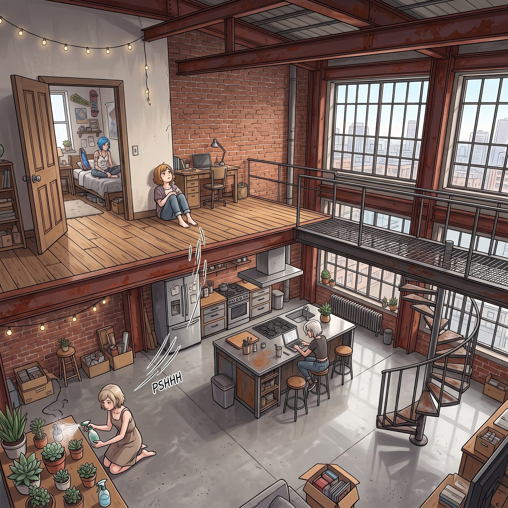

隔音鉛板

珍珠區這間老廠房改造的頂層 Loft，挑高將近五米，紅磚牆、裸露的工字鋼樑、水泥地。建築師手冊上管這叫「後工業美學」，Max 私下管這叫「隔音基本靠信仰」。
二樓那間儲藏室隔出來的小臥室，木地板每走一步都會呻吟一聲；一樓客廳的任何響動，都會順著挑高的空腔忠實地傳遍全屋。連 Kate 在角落給多肉噴水的「噗嗤」聲，坐在中島台前的人都聽得一清二楚。
至於 Max 和 Chloe 的關係，在這間屋子裡早就不是什麼要壓低聲音的話題。Chloe 會極其自然地在沙發上把頭枕在 Max 腿上看漫畫，出門買菜隨手攬著她的腰。某天 Max 剛掀開暗房門簾，她當著另外兩人的面湊上去，給了她一個帶機油味的響亮親吻。
Victoria 眼皮都沒抬：「請注意公眾場合的社交距離。我的視網膜不需要接受未經分級的內容。」
Kate 只是笑，走過去把兩人踢在客廳中央的鞋——一雙帆布鞋、一雙沾機油的工裝靴——並排擺正。
問題從來不出在這裡。問題出在，Chloe 這個人，幹任何事情的動靜，都大得像在拆一棟樓。
一、 凌晨兩點
那天深夜，二樓木地板先傳來一聲悶響「咚——」，接著「啪」的一聲脆的，床架開始劇烈搖晃。
然後是喘息。粗重、急促的喘息。
「Chloe……」Max 帶著哭腔，「慢一點……我手腕真的要斷了……放開……」
「不行！」Chloe 咬牙低吼，「再撐十秒！我數到十——用力，夾緊了！」
一樓，剛倒完溫水準備回房的 Kate 僵在原地，臉以肉眼可見的速度紅透，一路紅到耳根。她放下杯子，用兩隻手死死捂住耳朵，低著頭用一種近乎逃跑的碎步竄回房間。那一晚她的燈亮到很晚，隱約聽得見裡面在小聲反覆地念著什麼經文。
Victoria 的忍耐維持了大概四十秒。
她套著真絲睡袍衝出主臥，一手抓著一支剛點著的雪松香薰蠟燭，站在鐵樓梯口朝上面吼：
「PRICE！CAULFIELD！妳們兩個要是不能在床上把動作幅度控制在人類正常範圍內，明天我就請專業團隊，給整個二樓鋪滿隔音鉛板！用 Chase 家族信託基金付款那種！」
樓上安靜兩秒。
然後，滿頭大汗的 Chloe 穿著寬大的骷髏背心從門口探出頭。一隻手套著橘色的防滑腕力球，另一隻手拎著一根生鏽的、從報廢引擎上拆下來的皮帶輪。
「哈？蔡斯，妳鬼叫什麼？」她理直氣壯，「Maxine 說她端那台大畫幅相機端得手腕發痠，老娘正在用汽修握力器給她做特種體能集訓。一組二十下，她第三組就開始耍賴。」
Victoria 舉著蠟燭，表情經歷了一段很複雜的旅程。
Max 這才從門後爬出來，趴在二樓走廊地毯上揉著發抖的小臂：「……我沒耍賴。我說的是手真的會斷。」
「藉口。」Chloe 把腕力球扔給她，「明天同一時間，第四組。」
二、 清單越來越長
握力訓練只是個開頭。
三天後午休，Victoria 抱著一疊佈展圖推門進來，正撞見沙發上纏成一團的兩條長腿。Max 半個人被按在靠枕裡，睡袍帶子散了，臉漲得通紅，一邊踢腿一邊尖叫：「不要——那裡不行——太癢了！Chloe 我要生氣了我認真的！」
Victoria 猛地用佈展圖擋住眼睛：「上帝啊。客廳是公共區域。妳們能不能把這種荷爾蒙過剩的活動留到臥室裡去。」
真相是：Chloe 前一天整理 Max 的底片夾，翻到一張自己睡覺流口水的抓拍，正在用「肋骨與腋下同步物理拷問」逼 Max 交代還有沒有別的底本。
「這張必須銷毀！」Chloe 騎在她身上宣布。
「打死不交，這是我今年的年度最佳！」
第五天，一隻浣熊從沒關嚴的天台鐵門溜進來，在 Kate 的香草溫室裡開派對。Chloe 抄起一條搬家毛毯就衝上去，客廳裡瞬間全是「趴下——別動——我壓住牠了！」的怒吼、傢俱翻倒的巨響，和 Max 站在餐桌上不知道在尖叫什麼的高音。
浣熊被禮送出境，一盆迷迭香壯烈犧牲。
第二天早上，樓下那位在家辦公的音樂製作人在他們門上貼了一張字條，措辭客氣，但顯然忍很久了。
Victoria 沒有打電話給物業，也沒有考慮半秒鐘要不要照人家的要求做點什麼。她把那張字條裝進一個從畫廊順來的亞克力展籤框，端端正正立在早餐桌中央，然後用一種主持追思會的語氣，一字一句念給全桌聽：
「『親愛的樓上鄰居：昨晚十九點四十七分至二十點零五分之間發生的……事件，其劇烈程度已超出普通住宅結構的設計餘裕。隨函附上我當時的心率記錄截圖。』」她放下字條，環視一圈，「Price。這位先生用了『事件』這個詞。他甚至不敢寫出來那是什麼。」
「那是浣熊！」
「他不知道是浣熊。」Victoria 優雅地咬了一口貝果，「沒有人知道是浣熊。整棟樓現在都以為妳們在二樓馴獸。這個誤會我打算保留，它每天早上都能讓我心情很好。」
Kate 低著頭，肩膀一抖一抖。
三、 那個夢
真正的那一次，沒有人衝上樓。
凌晨三點多，二樓傳來的不是巨響，是另一種動靜——壓抑的、急促的呼吸，床板短促地響了幾下，然後是 Max 很輕、很穩的聲音，一個字一個字地說著什麼，像在把誰從很遠的地方往回拉。
一樓，Kate 從房間探出頭，聽了兩秒。她認得這個。她沒有捂耳朵，也沒有回房。她走進廚房，燒了一小壺水。
主臥裡，Victoria 睜著眼睛躺在黑暗中。樓上又響了一下。她的手指在被子上動了動，最後什麼也沒做——沒有下床，沒有吼隔音鉛板。她只是翻了個身，把香薰蠟燭吹熄。
樓上的聲音慢慢平下來，變成兩個人很低的說話聲，然後是安靜。
第二天早上，二樓臥室門口放著一杯已經涼了的洋甘菊茶，旁邊壓著一張便利貼，Kate 的字：「給誰都行。」
Chloe 端著茶下樓的時候，Victoria 正在中島台前喝咖啡，頭也沒抬。
「昨晚那個，」Chloe 開口，有點不知道怎麼說，「不是——」
「我知道不是。」Victoria 翻了一頁報紙，「那盆迷迭香妳還欠 Kate 一盆新的，今天去買。還有，把那個腕力球從樓梯上收走——我昨晚差點踩上去摔下來，那才是這間屋子真正的安全隱患。」
「……哦。」
「別杵著了，茶要涼透了。」
四、
那天晚上，二樓又傳來一點動靜——很輕，床板響了一下，然後是壓低的笑聲。
一樓沒有人管。Kate 已經睡了，Victoria 在主臥裡翻了個身，沒有起來。
她那天在手帳上寫的是：
這間屋子裡最危險的，從來不是她們光明正大的戀情。是 Price 那傢伙，總能把任何一件普通的室內活動，搞得聽起來像一場拆遷工程。
鉛板我是不會裝的。真裝了，我就沒有藉口每週吼她三次。